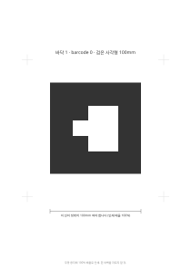
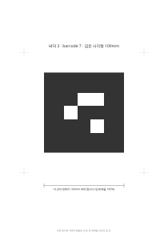
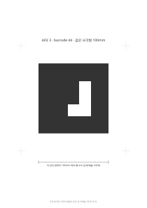
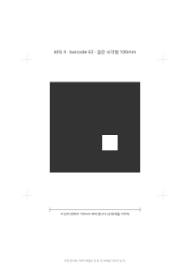
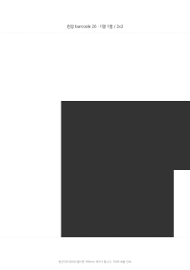
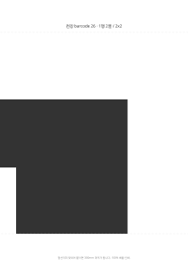
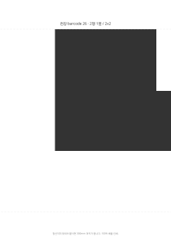
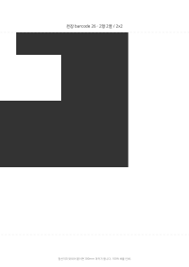

ARToolKit 3x3 matrix code. 원본은 artoolkit-barcode-markers-collection 에서 받아 흰 여백만 붙였다. 100% 배율, 무광 용지로 인쇄하고 흰 여백은 자르지 말 것. 여백이 없으면 사각형을 못 찾는다.

바닥 1 · barcode 0

바닥 2 · barcode 7

바닥 3 · barcode 44

바닥 4 · barcode 63
천장 · barcode 26 · 대형 출력용 한 장

타일 1행1열

타일 1행2열

타일 2행1열

타일 2행2열
천장용은 흰 여백까지 450mm 라 A4 나 A3 에 한 장으로 안 들어간다. 대형 출력이 가능하면 한 장짜리를, 아니면 A4 네 장 타일을 100% 로 찍어 점선끼리 맞대어 붙인다.
0~4 는 3x3 격자가 서로 한 칸밖에 안 달라서(회전 포함 최소 거리 1)
멀리서 한 칸만 잘못 읽혀도 다른 마커가 된다. 0, 7, 44, 63, 26 은 최소 거리가 3 이다.
다시 고르려면 pick_ids.py 로 거리를 재고 web/config.js 의 MARKERS 를 맞출 것.